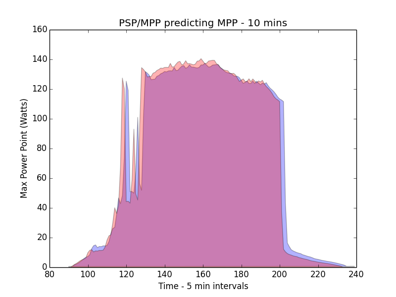
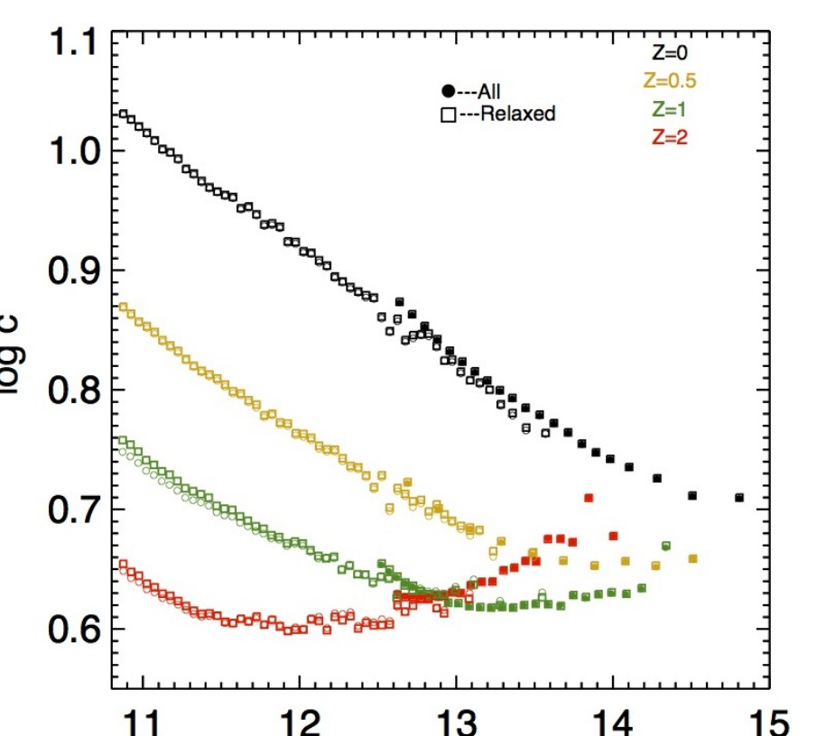

Projects
Production AI systems in industry, and models built to test theory and sharpen scientific measurement.

Verifiable Rewards for Predicting Multidistrict Litigation
A daily agentic discovery loop: a Thompson-sampling bandit allocates frontier research agents across search strategies under a reward computed in code, feeding a discrete-time hazard model of MDL consolidation at 0.90 held-out AUC.

The Agent Risk Harness
Architected and launched a risk intelligence platform now licensed by large corporate insurers and Big 4 advisory firms. Ten-plus concurrent AI features including Risk Deep Research, Risk Query Agent, and litigation prediction, built on an agent harness supplying memory, validated procedures, permissions, and auditable decision traces.

Agentic Discovery for Science
An autonomous AI scientist that ran 19 cycles and 49 analyses across 12 methodologies on 25 years of CERES satellite data, gated by a mandatory adversarial self-check, shuffle, confound, and robustness tests, before any result was recorded. Found that ENSO mediates hemispheric albedo coupling, and that cloud→albedo causality is unidirectional. Reported one of its three hypotheses as inconclusive.

Generative Predictor Search
Using LLM reasoning to propose and validate covariates for multivariate time-series forecasting. Reduced MAPE by an average of 15.6% against naive univariate autoregression with a 13× decrease in run time, while adding logical validation of chosen predictors.

NEO: Photometric Super-Resolution
A conditional GAN translating Subaru HSC imagery into approximate Hubble quality. Improves galaxy morphological measurements 2–10× and generalises to unseen sky. Trained on ~1.5M paired cutouts; code and weights released to the astronomical community.

Recurrent networks for microgrid power forecasting
Predicting solar array max power point 10–60 minutes ahead at the NASA Ames Renewable Energy Testbed. Built the full pipeline: sensor integration on a Raspberry Pi, a MySQL schema and cron ingestion at five-minute resolution, then recurrent network models over the resulting series. Chart shows predicted (blue) against observed (red) at a ten-minute horizon.

The Shape of Dark Matter Halos in ΛCDM
Senior thesis with Joel Primack. Measured halo concentration and triaxial shape across the Bolshoi and MultiDark N-body simulations, comparing shape estimators at Rvir and 0.3Rvir and testing how relaxation criteria change the recovered mass–concentration relation.